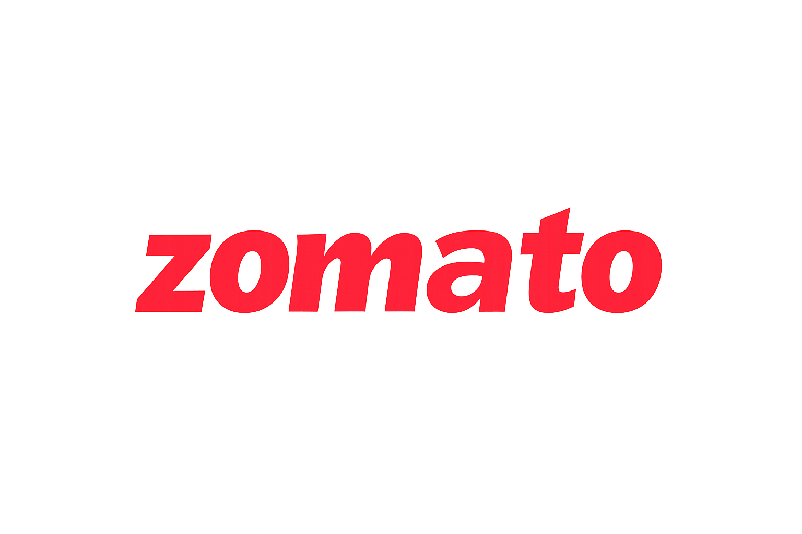

Let multiple participants join a shared cart from their own devices, add items independently, and settle payment via UPI based split, eliminating the awkward phone passing and manual bill coordination forever.

| Field | Details |
|---|---|
| Product Name | Group Order Split Bill, Zomato |
| Document Version | v1.1 |
| Author | Achintya, Associate Product Manager |
| Status | In Review |
| Last Updated | 1 June 2026 |
| Target Release | Q3 2026 |
| Stakeholders | Engineering (Backend, Payments), Design (UX/UI), Mobile (Android, iOS), Web/Frontend, Payments & Wallets team, Data & Analytics, Legal & Compliance, Marketing & Growth, QA |
| Distribution List | Product, Engineering, Design, Payments, Legal, Support, QA, Marketing |
Today, many Zomato users place group orders (for teams, families, gatherings, etc.) using a single account and device. That requires the person placing the order to pass their phone around so others can select items, which is time consuming, awkward, and increases friction in the ordering experience.
This PRD proposes Group Order Split Bill: a feature that lets multiple participants join a shared cart from their own devices, add items independently, and complete payment via automated UPI based split settlement. The feature will support common split methods (itemized per person, equal split, and custom shares) and allow the organizer to manage the shared cart.
The Core Problem: Zomato users who want to order food for a group currently have no streamlined way to do so. The organizer must either collect orders one-by-one from each person and manually add them to a single cart, or pass their phone around so others can pick their own items. Both approaches are inefficient and friction heavy, increasing time to place an order, creating privacy concerns, causing confusion about who ordered what, and delaying final checkout.
Who Has This Problem?
Evidence of the Problem:
| Signal | Data Point |
|---|---|
| Play Store reviews requesting group order | 4,000+ reviews explicitly mention "group order" or "bulk order" functionality |
| YoY growth in group sized orders | 40% YoY increase in orders significantly larger than typical individual orders |
| Internal observation | Zomato team events rely on manual coordination, same pain users face daily |
| Competitive context | Platforms in other markets already offer group ordering, setting user expectations post UPI |
What Happens If We Don't Solve It?
Business Goals
| Goal | Target |
|---|---|
| Increase AOV for group orders vs. overall platform AOV | +10-12% higher AOV via group order flow |
| Reduce negative reviews/tickets mentioning group order hassle | ≥30% reduction YoY within 6 months of launch |
| Drive group order adoption in pilot cities | ≥15% of all orders via Group Order flow within 3 months |
| Increase repeat group order rate | ≥20% increase in users placing ≥2 group orders in 30 days over 6 months |
| Become preferred app for team meals and social ordering | Qualitative, positive sentiment in social media and reviews |
User Goals
🚫 Non-Goals (Out of Scope for v1)
| Metric | Target | Timeframe | Ownership |
|---|---|---|---|
| Group-order AOV vs. baseline | +10-12% YoY | 6 months post-launch | Product / Data |
| % of orders via Group Order flow (pilot cities) | ≥15% | 3 months post-launch | Product / Growth |
| Repeat group order rate (≥2 group orders in 30 days) | +20% over baseline | 6 months | Product / Data |
| Negative reviews/tickets mentioning group-order hassle | −30% YoY | 6 months | CX / Product |
| Time to checkout for group orders (median) | ≤5 min for 4–6 people | 3 months | Engineering / Product |
| Payment success rate for split UPI flows | ≥95% | 1 month post-launch | Payments / Engineering |
| Support tickets per 1,000 group orders (split-related) | ≤5 | 3 months | CX / Product |
Current Workflow: Creates a Google Form to collect food preferences, waits for responses, manually adds items to a single Zomato order, and tracks billing via spreadsheets.
Pain Point: Time consuming coordination, risk of errors (missing items, duplicate entries), no automated split, awkwardness in chasing preferences repeatedly.
Goal: Let everyone choose their own meal from their own phone. Automatically track who ordered what and simplify internal billing.
Tech Comfort: High; uses UPI, Zomato, Swiggy, Google Forms, and WhatsApp fluently.
Current Workflow: Personally asks each family member what they want, manually adds all items to a single order, keeps mental notes about who ordered what.
Pain Point: Time consuming "interrogation" to decide preferences. Confusion about who ordered what and how to split costs within the family.
Goal: Remove the hassle of repeatedly asking everyone. Let each family member choose from their own phone with a clear view of who pays what.
Tech Comfort: High; uses social media, Zomato, and UPI frequently.
Current Workflow: Asks friends one by one what they want, manually adds all items, tracks who owes what via WhatsApp or mental notes.
Pain Point: Tedious preference collection, confusion over splits, awkwardness when money is involved among friends.
Goal: Let each friend choose from their own phone with an easy, transparent equal or per item bill split. Reduce friction around money.
Tech Comfort: Very high; uses social media, food delivery, and UPI fluently.
Current Workflow: Sends a WhatsApp message asking everyone to reply, manually collects responses, adds items to a single cart, uses spreadsheets or mental notes for splits, and chases UPI payments manually.
Pain Point: Repeatedly chasing responses, error prone manual entry, no automated split, delayed reimbursements, no clear receipt per person for internal accounting.
Goal: Create a group order link, let teammates join and order directly, enable instant UPI based split at checkout, and get a per person receipt automatically.
Tech Comfort: High; uses Zomato, UPI, WhatsApp, spreadsheets, and productivity tools fluently.
Primary User Journey - Organizer Flow
Participant Flow
Epic 1 — Group Order Creation & Link Sharing
Epic 2 — Common Cart for Group Orders
Users must be able to create a group order from the app or website and instantly generate a unique group order link. The organizer can share this link via WhatsApp, email, SMS, or other supported channels. The link allows participants to join the group order and access a shared cart.
All participants can add, edit, or remove their own items in a common cart from their own devices. The cart must be synchronized in real time across all participants' devices, showing who joined and what each person has ordered. Visibility is configurable by the organizer.
The organizer can view the full cart, see who ordered what, and make final adjustments (remove or modify items) before finalizing the order. The organizer has the authority to confirm and place the order once all participants have added their items.
The organizer can choose how the bill is split: Itemized split (each person pays for what they ordered), Equal split (all participants split the total equally), or Custom split (organizer manually adjusts shares). The system calculates each participant's share, including taxes, delivery fee, and platform fees.
Once the split method is chosen, the system triggers UPI payment requests to each participant for their share. Participants confirm payment via their UPI app. The organizer can also pay the entire bill themselves if needed. The system tracks payment status per participant in real time.
After the order is confirmed and payment is complete, each participant receives a clear receipt showing: their items, their share, and full order summary (including taxes, delivery fee, platform fees). Participants can also see the order status (preparing, dispatched, delivered) in the app.
The system defines conditions for group order expiry (e.g., organizer cancels, time limit exceeded, no new participants). When expired, the group link becomes invalid and all participants are notified that the group order is no longer active.
If the organizer cancels or modifies the order after participants have paid, the system notifies all affected participants. The system handles refunds or adjustments based on Zomato's refund policy.
| NFR ID | Category | Requirement |
|---|---|---|
| NFR-01 | Performance | Cart updates (add, edit, remove) must be visible to all participants within ≤2 seconds under normal network conditions |
| NFR-02 | Payments | UPI split payment flow must achieve a payment success rate ≥95%; failed payments handled with retry options and clear error messages |
| NFR-03 | Security | Group order links must be unique, cryptographically secure, tamper-proof, and validated on each use to ensure the group is still active |
| NFR-04 | Privacy | Participant information (name, contact, payment details) stored securely with encryption; not exposed unnecessarily to other participants unless visibility is enabled |
| NFR-05 | Reliability | System must handle network failures gracefully, show clear error messages, avoid data loss during partial failures, and not lose cart items due to transient errors |
| NFR-06 | Scalability | Must support groups of at least 50 participants; backend must scale for high concurrent usage during peak lunch/dinner hours without performance degradation |
| NFR-07 | Availability | Group order feature must maintain ≥99.5% uptime during operational hours |
| NFR-08 | Compatibility | Feature must work on Android (current major versions), iOS (current major versions), and Web (Chrome, Safari, Firefox) with consistent UX across platforms |
| NFR-09 | Observability | System must log key events (group creation, link share, item add, payment success/failure) and provide monitoring dashboards for payment success rate, cart sync latency, and error rates |
| NFR-10 | Performance | App and web pages must load within ≤2 seconds on average devices; respond to user actions (add item, share link) within ≤500ms |
Entry Points - Users must discover the feature from multiple natural points:
| Entry Point | Description |
|---|---|
| Home Screen | Dedicated "Create Group Order" button or card visible when user has selected a restaurant |
| Restaurant / Menu Page | "Start Group Order" button near "Add to Cart" area — visible only for restaurants that support group orders |
| Cart Screen | "Convert to Group Order" option after items are added, allowing conversion without starting from scratch |
| Order History | "Recreate this group order" button for past group orders — supports repeat team lunches and weekly orders |
| Participant Entry | Group order link (shared via WhatsApp, SMS, email) opens the shared cart in-app or on web |
Tone & Messaging Guidelines:
Assumptions:
Constraints:
| Phase | Target | Scope | Markets & Rollout |
|---|---|---|---|
| Phase 1 - Internal Pilot + Limited Beta | August 2026 | FR-01 to FR-06 · Itemized + equal split only · Basic UPI payment | India only · Bengaluru, Mumbai, Delhi NCR, Hyderabad, Pune · Android first (5% → 20% → 100% over 6 weeks) · iOS 2 weeks later · Web: internal testing only |
| Phase 2 - Expanded Beta + Web | November 2026 | FR-01 to FR-08 · Custom split enhanced · Visibility toggle for others' orders | India · Tier-1 + Chennai, Ahmedabad, Kolkata, Jaipur, Kochi · Android + iOS (10% → 30% → 100% over 8 weeks) · Web: 4 weeks after mobile |
| Phase 3 - Full India Launch + Optimization | February 2027 | All FRs · Recreate past group orders · Payment reminders · Organizer analytics | India wide (Tier-1, Tier-2, select Tier-3) · Android + iOS + Web (20% → 60% → 100% over 10 weeks) |
| # | Question | Owner | Due |
|---|---|---|---|
| OQ-01 | Should v1 strictly support only single restaurant group orders, or is there a minimum viable path to support 2–3 restaurants? What are the logistics implications? | PM + Engineering | July 1, 2026 |
| OQ-02 | Should participants be able to hide their items from others in the group? What is the default visibility setting? | Design + PM | July 5, 2026 |
| OQ-03 | Should the organizer be able to remove or modify a participant's items without confirmation? What is the policy if a participant objects after the fact? | PM + Legal | July 8, 2026 |
| OQ-04 | What should be the default expiry time for a group order link (e.g., 30 minutes, 1 hour, 24 hours)? Should organizers be able to extend it? | PM + Engineering | July 10, 2026 |